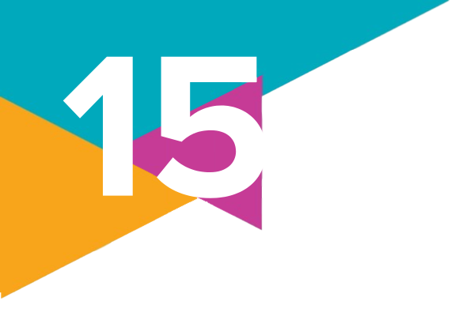

1.
O que significa e quando ocorreu o processo de urbanização dos primeiros grupos humanos?
2.
O que é segregação socioespacial? Por que ela ocorre?
3.
(FMC-RJ – 2021)
Observe a charge sobre a problemática social.
A crítica contida na charge é dirigida centralmente ao seguinte problema:
a) Crise ambiental derivada de epidemias urbanas
b) Desigualdade social decorrente da explosão demográfica
c) Segregação socioespacial gerada nos grandes centros urbanos
d) Redução do potencial turístico provocada pela pobreza urbana
e) Desigualdade social causada pela desorganização dos trabalhadores
Observe a charge sobre a problemática social.
Disponível em: http://www.arionaurocartuns.com.br/2016/
Acesso em: 20 out. 2020.
a) Crise ambiental derivada de epidemias urbanas
b) Desigualdade social decorrente da explosão demográfica
c) Segregação socioespacial gerada nos grandes centros urbanos
d) Redução do potencial turístico provocada pela pobreza urbana
e) Desigualdade social causada pela desorganização dos trabalhadores
4.
Leia os textos a seguir e faça o que se pede.
Texto I
Direito à moradia é um direito social reconhecido a todos os brasileiros no âmbito dos Direitos e Garantias Fundamentais declarados na Constituição Federal. É um direito de conteúdo amplo, não significando somente uma casa para morar. A proteção do direito a moradia envolve vários aspectos: segurança na posse, disponibilidade de serviços, equipamentos e infraestrutura, disponibilidade de moradia a preços acessíveis, habitabilidade, acessibilidade, localização e adequação cultural.
Já o direito de propriedade é o direito de usar, fruir, dispor de um bem e ainda reivindicar esse bem. É também um direito fundamental, previsto na nossa Constituição Federal. Contudo, não é um direito absoluto. Nossa constituição protege a propriedade que cumpre sua função social.
Texto II
As ocupações de prédios abandonados ganharam força após as enchentes em Porto Alegre. Ao menos quatro ocupações realizadas por famílias atingidas pelas chuvas ocorreram no centro da capital gaúcha desde a histórica enchente de maio [de 2024].
As novas ocupações são sintomas do agravamento da falta de moradia na capital gaúcha. Segundo pesquisa da Fundação João Pinheiro, em 2019 existia um déficit habitacional de mais de 87 mil habitações em Porto Alegre, situação que piorou com as enchentes que desalojaram, em todo o estado, mais de 388 mil pessoas, de acordo com o último boletim da Defesa Civil.
a) Qual é a relação entre os direitos mencionados no Texto I e a situação descrita no Texto II?
b) Podemos afirmar que as ocupações de prédios abandonados ferem o princípio de direito à propriedade conforme descrito do Texto I? Por quê?
Texto I
Direito à moradia é um direito social reconhecido a todos os brasileiros no âmbito dos Direitos e Garantias Fundamentais declarados na Constituição Federal. É um direito de conteúdo amplo, não significando somente uma casa para morar. A proteção do direito a moradia envolve vários aspectos: segurança na posse, disponibilidade de serviços, equipamentos e infraestrutura, disponibilidade de moradia a preços acessíveis, habitabilidade, acessibilidade, localização e adequação cultural.
Já o direito de propriedade é o direito de usar, fruir, dispor de um bem e ainda reivindicar esse bem. É também um direito fundamental, previsto na nossa Constituição Federal. Contudo, não é um direito absoluto. Nossa constituição protege a propriedade que cumpre sua função social.
QUAL é a diferença entre “direito à moradia” e “direito de propriedade”? Ministério das Cidades, 23 mar. 2023. Disponível em: https://www.gov.br/cidades/pt-br/acesso-a-informacao/perguntas-frequentes/desenvolvimento-regional/regularizacao-fundiaria/2-qual-e-a-diferenca. Acesso em: 9 set. 2024.
Texto II
As ocupações de prédios abandonados ganharam força após as enchentes em Porto Alegre. Ao menos quatro ocupações realizadas por famílias atingidas pelas chuvas ocorreram no centro da capital gaúcha desde a histórica enchente de maio [de 2024].
As novas ocupações são sintomas do agravamento da falta de moradia na capital gaúcha. Segundo pesquisa da Fundação João Pinheiro, em 2019 existia um déficit habitacional de mais de 87 mil habitações em Porto Alegre, situação que piorou com as enchentes que desalojaram, em todo o estado, mais de 388 mil pessoas, de acordo com o último boletim da Defesa Civil.
LEÓN, L. P. Ocupações de prédios abandonados ganham força em Porto Alegre. Agência Brasil, 19 jun. 2024. Disponível em: https://agenciabrasil.ebc.com.br/direitos-humanos/noticia/2024-06/ocupacoes-de-predios-abandonados-ganham-forca-em-porto-alegre. Acesso em: 9 set. 2024.
a) Qual é a relação entre os direitos mencionados no Texto I e a situação descrita no Texto II?
b) Podemos afirmar que as ocupações de prédios abandonados ferem o princípio de direito à propriedade conforme descrito do Texto I? Por quê?
5.
Reúnam-se em duplas e, considerando os textos apresentados na questão anterior, pensem em políticas públicas que poderiam ser implementadas para resolver o problema de falta de moradia em cidades como Porto Alegre.
6.
Sua cidade enfrenta problemas de falta de moradia? Existem pessoas morando nas ruas ou em habitações improvisadas?
Reúnam-se em grupos de até quatro pessoas e realizem uma pesquisa sobre a existência ou não de déficit habitacional na cidade onde residem. Se não houver dados disponíveis sobre esse tema na internet, procurem entrar em contato com órgãos municipais responsáveis, como a Secretaria Municipal de Habitação e a Secretaria Municipal de Assistência Social, para obter essas informações. Depois desse levantamento, compartilhem os dados encontrados com a turma e debatam o tema em sala de aula.
Reúnam-se em grupos de até quatro pessoas e realizem uma pesquisa sobre a existência ou não de déficit habitacional na cidade onde residem. Se não houver dados disponíveis sobre esse tema na internet, procurem entrar em contato com órgãos municipais responsáveis, como a Secretaria Municipal de Habitação e a Secretaria Municipal de Assistência Social, para obter essas informações. Depois desse levantamento, compartilhem os dados encontrados com a turma e debatam o tema em sala de aula.